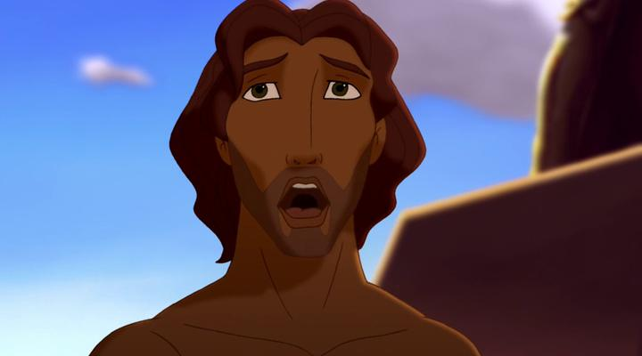

In America, Disney has always been the undisputed king of animation. Starting during the big animation boom in the 1990's, DreamWorks's new animation division (with Dreamworks' start from Steven Spielberg and Jeffrey Katzenberg) would become Disney's biggest American competitor, growing their own catelog of recognizable family films in the decades that followed. Starting with 2D animation, they would only produce four theatrical films before doubling-down on only CGI animation. Actually... they technically made five 2D films. "Joseph - King of Dreams" is that odd one out, different because it was a direct-to-video film instead of a full theatrical release, the only such release Dreamworks would prepare. Sure, Disney was producing such direct-to-video movies for years, most of which aren't worth mentioning. But since Dreamworks ultimately made so few of this type (and since their eventual Bluray release schedule, starting in 2018 by Universal, would include "Joseph'), it's worth briefly talking about."Joseph - King of Dreams" was a direct followup to "The Prince of Egypt," using a similar art style and also portraying a story from the Christian bible. Not super familiar with all the stories, I presume it's the same story as the hit musical "Joseph and the Amazing Technicolor Dreamcoat." The two films start the same way, with a disclaimer (in the same font, no less) explaining that while certain creative liberties were taken, the creative team believes the core values and meaning of the original story are preserved. If you are looking for a good Christian story for you or your family, and loved "The Prince of Egpyt," then you'll get the most out of "Joseph." But when reviewed critically, it's clear that the movie doesn't hold a candle to "Egypt," making several compromises that make it feel like a direct-to-video film.The first major issue is the animation, which is claimed to have been done by much of the same team as "Egypt," but feels lke it's been outsourced by cheaper companies. The animation is still expressive, but movement (like walking) and lip-syncing (and other facial expressions) don't look quite right. Even though it's clear more effort was put in them than a cheaper Japanese anime, that it isn't done WELL feels distracting. While DreamWorks has been proud to use hybrid 2D/3D techniques to make their animated worlds feel more cinematic, "Joseph" is restricted to only 2D animation, only using digital effects minimally, typically during dream sequences. While I applaud avoiding 3D animation when it isn't necessary, this clearly restricts the movie from more ambitious shots. Generally, I still appreciate the distinct character styles carried from "Egypt" (although at one point, lead character Joseph looks identical to Moses from the other movie), and the dream sequences, often appearing like Van Gogh paintings in motion, give a chance to try more interesting visual techniques. The story of "Joseph" also suffers a bit in scope, and in its dedication to its religous philosophy. Joseph is born to father Jacob at a time when further sons seemed impossible, and becomes the father's favorite of his eleven sons. Treating him differently with education, and with a beautiful coat, the other brothers (working in the farm everyday) eventually grow resentful and fearful of their own rights, and sell him as a slave to Egpytian nobles at night. Joseph was a handsome, but arrogant young man up to this point, so he is forced to learn hard work under his new masters. Despite this, he also finds opportunity to use his gifts of knowledge, and his ability to "understand dreams," making him prosperous, and eventually, at a point where he given the opportunity to seek revenge or offer forgiveness to his brothers. This plot has two conflicting themes: Joseph is both "a special miracle child" and also no different from God's other children. I don't get much out of either by the end of the film, just that Joseph is a smart and lucky guy with insight on modern agriculture techniques. Through Joseph's hardship, there are moments when he accepts that even these parts of his life are a part of God's plan, represented in the movie's most beautiful song "You Know Better Than I." But unlike "The Prince of Egypt," God seemingly has no part in this movie, aside from (presumably) telling Joseph the meaning of dreams that he and others have. To further make the point, it offers a scene (like in "Egypt") where the traditional Gods worshiped by Egpytians are proven to be worthless or false to Joseph's true God.The best biblical stories on the screen are the ones that portray the core values of Christianity, not its religous beliefs. Things like kindness, forgiveness, and hope. Not "my God told me, therefore, it is so." "Joseph - King of Dreams" won't convert anyone, and its themes may alienate a large audience from different religions and cultural backgrounds. Starting on farmland, the story also feels far less ambitious, not really picking up until it arrives in Egpyt, but even then just treading the same ground as the previous film, but less compellingly.Like "The Prince of Egpyt," "Joseph - King of Dreams" is a musical. But like "Egypt," most of its songs aren't particularly good or memorable, save for one or two standouts. The voice acting is... acceptable? Joseph himself is played by Ben Affleck, a surprisingly high-profile star, and a good replacement as a lead to Val Kimmer in "Egypt." But like the story itself, the dialogue feels preachy, and Joseph's spoiled character never feels likable. According to online interviews, it sounds like the story team had trouble with this department, with the original script being much worse before the final product.It's hard to find good Christian films of high quality. Either due to a lack of money or due to mistrust of intent, animation series like "Vegetales" or Hanna-Barbara's "The Greatest Adventure" are about as close as we get. These are good ways to learn the stories without reading the bible. but fail to extend the religion outside of existing congregations, which ruins the point. "The Prince of Egpyt" is still the most successful animated outing, for it's high-quality animation and epic scale, and those features make it encouraged viewing even to those who don't believe in Christianity. "Joseph - King of Dreams" isn't an entirely bad movie, but I can't help but compare it, and it's preachy motives make it much more akin to "Vegetales."
- "Ani" More reviews can be found at : https://2danicritic.github.io/ Previous review: review_Jormungand Next review: review_Juni_Taisen_-_Zodiac_War